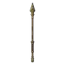

อัศวินเข็มนาฬิกา
มอนธาตุไม่มีธาตุ Lv 94–99
เจอที่
| แมพ | โซน | Lv | ภูมิภาค |
|---|---|---|---|
| ลานหอนาฬิกา | 94–99 | เมืองหอระฆัง | |
| ลานหอนาฬิกา | ใต้หอนาฬิกา | 98–99 | เมืองหอระฆัง |
ค่าสถานะตามเลเวล
| Lv | HP | ATK | DEF | MDEF | EXP | Job |
|---|---|---|---|---|---|---|
| 94 | 95,697 | 207–310 | 56 | 17 | 123 | 92 |
| 96 | 101,120 | 214–321 | 58 | 17 | 125 | 94 |
| 99 | 109,656 | 226–338 | 59 | 18 | 129 | 97 |
ตีด้วยธาตุไหนดี
แรงขึ้น: —
เบาลง: วิญญาณ ×0.25
วัตถุดิบที่ดรอป
| ของ | โอกาส | |
|---|---|---|
| เข็มนาฬิกาหัก | 55% | 1 ชิ้น (15% ได้ 2) |
อุปกรณ์ที่ดรอป (2)
| ของ | โอกาส |
|---|---|
 หอกยาวเข็มนาฬิกา | 0.06% |
| 0.03% |
สกิล
ทุบพื้น (Lv 25+) · ทุบพื้น (Lv 60+) · ดึง (Lv 60+)